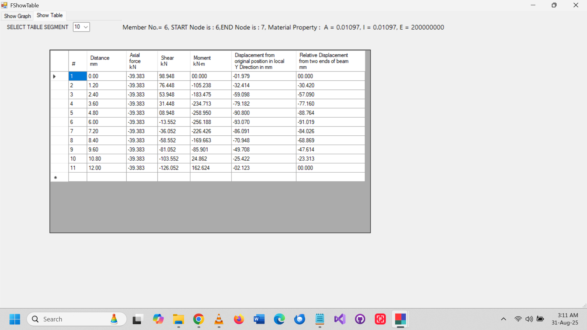
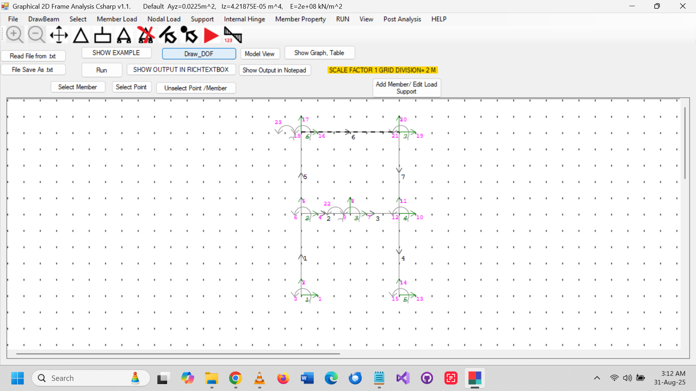
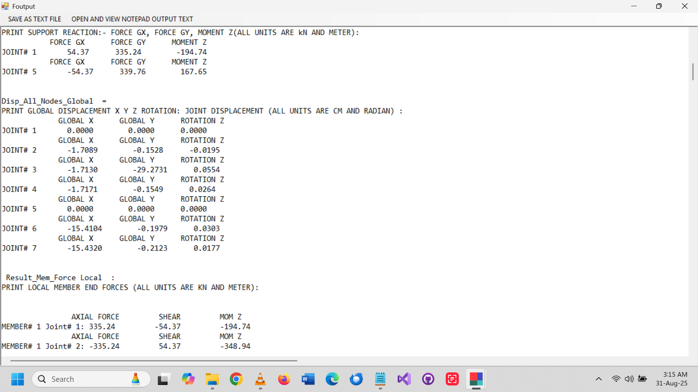
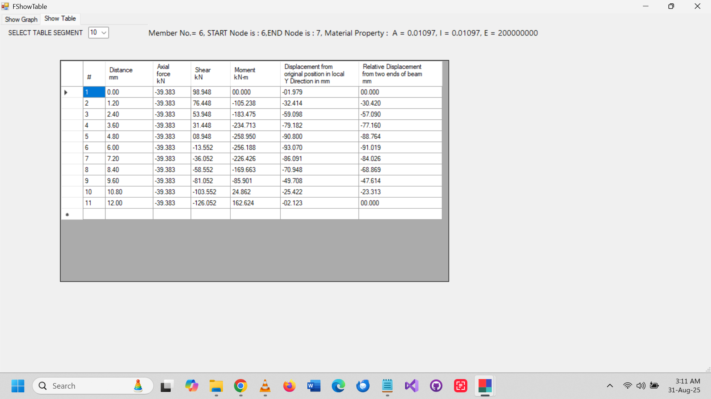
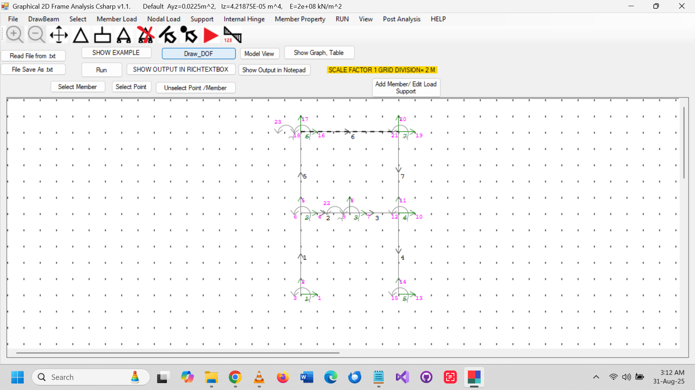
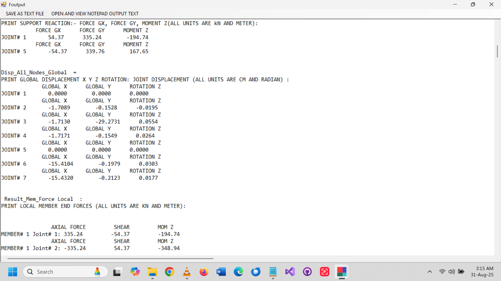
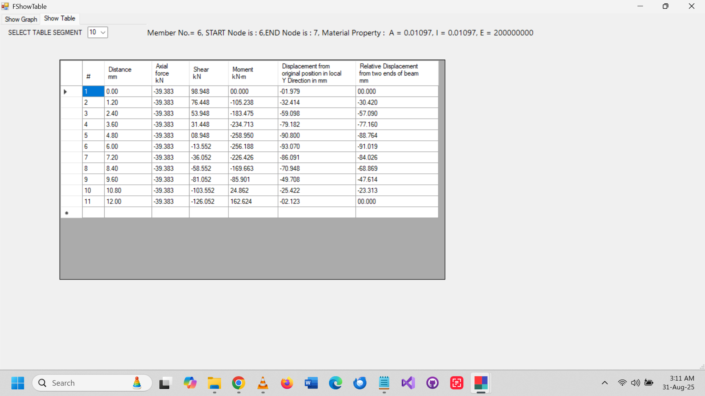
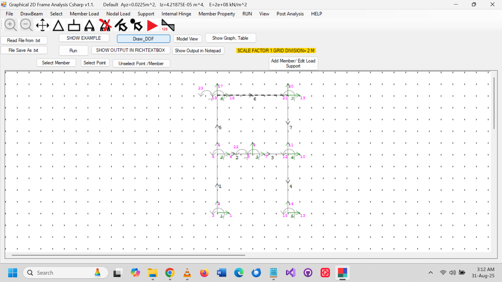
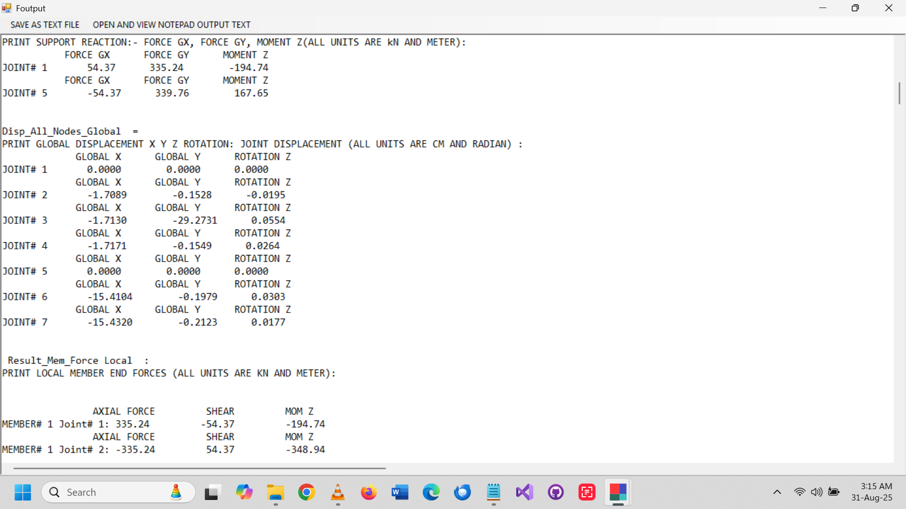

Screenshots – 2D Frame Analysis
 





Free & Open-Source Software for 2D Frame Analysis – interactive Frame Analysis and 2D Frame modeling in C#
by Md. Kamrul Hassan
Graphical 2D Frame Analysis is free and open-source software for analyzing 2D Frame and portal frames using the stiffness and matrix method. Written in C# and available on GitHub and SourceForge.
Ideal for students and teachers, it provides interactive visualization and detailed numerical Frame Analysis results.
Tap to watch on YouTube



Installer for Windows OS
Download Source ZIP (Latest)Full source code for study and modification
Email: kamrulabc@gmail.com
Source code available on GitHub.